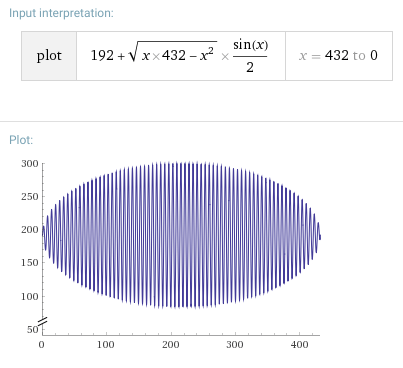
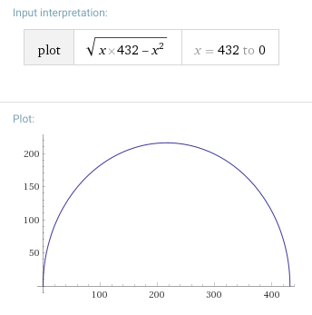
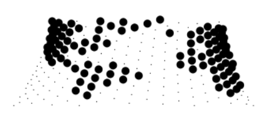

In this first hands-on part, I'm going to show you how this Mathieu Henri's (aka p01) dweet work:
function u(t) {
for(i=h=c.width=432;i--;)C(t-i)>0&&x.fillText('.⬤'['榁翻꺿듻ퟝ믭큰삗⢠挎ᩐ肦䰠椉䠊ᑒꊐࢀင'.charCodeAt(i/16)>>i%16&1],192+(i*h-i*i)**.5*S(t-i)/2,i/2+9)
}
Before we start, let's make it a bit more readable:
function u(t) {
data = '榁翻꺿듻ퟝ믭큰삗⢠挎ᩐ肦䰠椉䠊ᑒꊐࢀင';
points = '.⬤';
h = c.width = 432;
for(i = h; i--; ) {
if (C(t-i) < 0) continue;
cpos = Math.floor(i / 16);
bit = data.charCodeAt(cpos) >> i % 16 & 1;
chr = points[bit];
px = 192 + (i * h - i * i) ** .5 * S(t - i) / 2;
py = i / 2 + 9;
x.fillText(chr, px, py);
}
}
Let's start by understanding what are those strange characters in `data`. It was a clever way p01 found to compress world map points into a unicode string. Each unicode character holds 16 bits (UTF-16). Since his points are either land or sea, one bit per point is enough. His string has 24 characters, meaning there's a total of 24*16=384 points.
cpos = Math.floor(i / 16)To determine which character to pick, he does `i / 16`, which basically makes it jump to the next character every 16 iterations. Here I am explicitly converting i/16 to int by flooring it, but that's exactly what charCodeAt() does when it receives a float number.
data.charCodeAt(cpos) >> i % 16 & 1
Having picked a character, he shifts its code `i % 16` bits right to access the actual bit. Finally, a bitwise AND with 1 will isolate that pixel from the rest, returning either 0 (sea) or 1 (land). To understand more about how those strange characters decode into real data, check my other article here.
Now comes the math part. For each point picked, we have to project into onto a sphere and then map it to the screen. Golfed math can be a bit difficult to understand, so why not start by plotting it?
See it live here
Notes:
The x coordinate is mapped by zig-zagging through all the points, starting at the south pole and "peeling" the Earth as if it was an orange. Before we delve into the equation for the x coordinate, let's go back to the first statement in the for loop:
if (C(t-i) > 0) continue;
Now that we talked about peeling the Earth surface, this comes into play. We don't want to plot points on the opposite side of the globe. , so that they're not shown. It does that by checking the cosine of the point; if it is negative, cull it.
Ok, back to the equation for the x coordinate. We need to break it into parts.
First part is the easier one: 192. It's just a constant to center everything horizontally. All x points points will be shifted right this amount in pixels. Try setting it to zero to see how Earth's vertical axis shifts and snaps to the left border of the canvas.
Second part is
(i * h - i * i) ** .5
It's just a more concise (less chars) way to write
Math.sqrt(i*h - i**2)
Let's plot this:
Again, this is rotated 90 degrees counter-clockwise. Another way to see it is as the parametric equation of a circle, in the form r^2 = x^2 + y^2. Since we're only inputting positive values for i (or x in the plot), only the positive half of the circle is drawn. We need an extra bit to make it a sphere.
That's where the third part comes to help:
S(t - i) / 2
It uses the sine function to rotate our curve around the y axis, multiplying the second part and thus turning it into a sphere. You can virtually rotate any shape and turn it into a 3D object. For instance, this is what happens if you change the second part to be
(h * h + i * i) ** .5
Flat-earthers, breaking news for you: the Earth is a nuclear power plant chimney!
Besides multiplying by Math.sin(), the third part also divides everything by two. This is just to change the amplitude of the function, bringing it from a maximum of Math.sqrt(216*432 - 216**2)=216 down to 108 and adjusting it to fit the canvas.
Ok, having completely dissected the x coordinate, the y is much easier:
py = i / 2 + 9;
y just linearly increases with i, no big deal. As i goes from 432 to 0, y goes from 225 to 0. This stretches the orange peel in the vertical axis. Try dividing i by 1 or by 8 to see how it stretches more or less accordingly.
This concludes the hard part. The last statement is just about writing the text (i.e., the sea and land points) into the projected x and y coordinate:
x.fillText(chr, px, py);
And then time t comes to increment the rotation angle at every new frame, making the Earth rotate. Amazing piece of art :-)
While studying his code, I think I found a bug. Instead of a width of 432, I think he meant to use 383. See, 432 is 16 * 27, but it so happens that his data array has only 24 positions. When i is 432:
cpos = i / 16 = 27;
data.charCodeAt(cpos); // invalid position 27!
charCodeAt() will return NaN. It turns out that (NaN >> some amount) evaluates to zero, so the code still works; it's just probably not what Henri wanted.
383 makes more sense. It is 16*24-1, making the first 16 iterations of i correctly hit the 23rd character, then the next will pick the 22nd and so on.